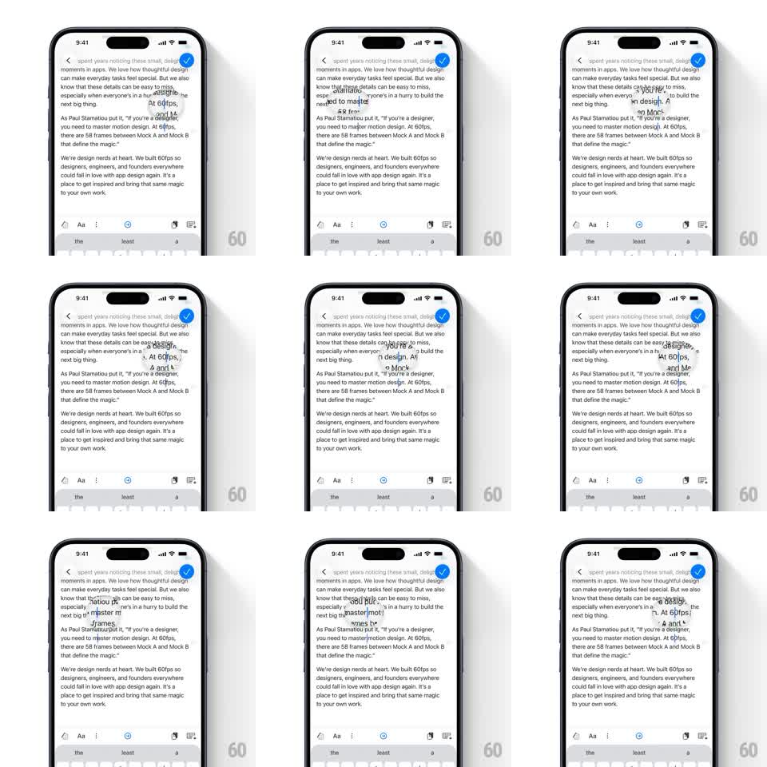

Media
Frame-by-frame

Rebuild this interaction 1:1: Craft's cursor-seek loupe - dragging the text cursor summons a liquid-glass bubble above your finger that magnifies the text under the cursor with an organic wobble.

Rebuild this interaction 1:1: Craft's cursor-seek loupe - dragging the text cursor summons a liquid-glass bubble above your finger that magnifies the text under the cursor with an organic wobble. ## Integration Integration: stack-agnostic spec - springs given as stiffness/damping, timed motions as duration + curve; map every value to your framework and animation library of choice. ## Scene Craft editor, white: a long-form article with serif paragraphs and a toolbar at the bottom. During cursor drag: a circular glass bubble floats above the touch point showing the cursor's text region magnified ~1.6x. ## Motion spec Pattern: liquid-glass magnifier bubble tracking the text cursor. - Long-press the cursor (or drag from the cursor handle): the bubble emerges from the cursor point - scale 0 -> 1 with spring ~350/15 (a soft blob overshoot), appearing ~48px above the finger so the text is never covered. - The bubble magnifies the text centered on the cursor position, updating live as the drag seeks left/right; its content pans smoothly (no snapping between lines). - The glass edge wobbles organically while moving: border radius modulates (50% +/- 6% at ~3Hz, phase-offset per corner) and the bubble tilts +/-3deg with drag velocity - it feels like a droplet, not a circle. - A faint refraction rim (1px lighter edge + subtle inner shadow) sells the glass; the text inside is sharp, never blurred. - On release: the bubble squashes slightly (scaleY 0.9) and shrinks back into the cursor point (200ms, ease-in). ## Calibration - Magnification is fixed (~1.6x) - no zooming; the fidelity cue is the sharp type. - The bubble tracks the cursor, not the finger - vertical line changes move it row to row with a 150ms ease. ## Reduced motion Bubble appears/disappears with a 150ms fade; no wobble or tilt. ## Don't miss - The bubble must never cover the cursor itself - it rides above with a constant gap. - Text inside the loupe keeps the document's real serif and line breaks - it's a lens, not a re-render.